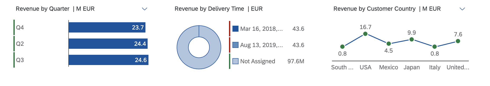
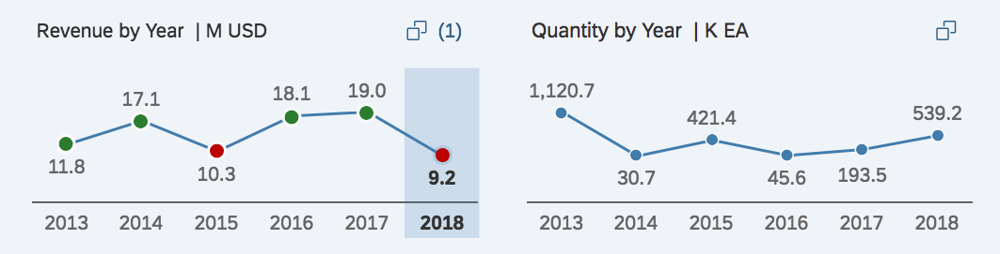

SelectionFields annotation for which a visual filter is
defined.
The ALP ignores the UI.Hidden fields when you
select filters if the IN mapping points to a field marked with
UI.Hidden
in the valuelist entity set. For example, the
Status_ID from the main entity set points to
StatusCode in the value help entity set (of the visual
filter). If the StatusCode is marked as
UI.Hidden, then the incoming value is
ignored.
Configuring the sap:value-list=fixed-values
property in the annotation.xml file lets you display visual
filter values in a dropdown list. This allows users to select or deselect values
that are not displayed in the chart. If the dropdown list is enabled, ensure that
the records available in the collection path entity set of the visual filter and
compact filter are the same for a smooth sync between the visual filter and the
compact filter.
The visual filter includes only the first measure and
dimension from the first chart annotation within the specified
PresentationVariantQualifier. Make sure that the dimension you
specify in the chart and the ValueListProperty of the
OUT parameter is the same. You can also define a
SortOrder property in the PresentationVariant
annotation to control the sort order based on a sort field.
Sorting in visual filters is based on this logic:
SortOrder property
in the PresentationVariant annotation.The sorting by the annotation is ignored for time-based dimensions for line-charts in the visual filter.
SortOrder property in
the PresentationVariant annotation.
You can also define visual filters for parameters.
You can now change the formatting of the text that appears on the visual filter chart
axis labels, legends, chart
tooltips,
and within the selected link (if a chart context is selected). The default view of
the visual filter bar is based on the filter fields defined in the
TextArrangement annotation and its type in the main entity set
to change the text behavior like this:
|
Text Arrangement Type |
Description |
|---|---|
|
TextFirst |
Use the visual filter to combine measures or item counts with filter values. The ChartDefault type that has the sap:text first, followed by the ID in brackets, for example, "Notebook (001)" |
|
TextLast |
ID followed by the sap:text in brackets, for example, "001 (Notebook)". |
|
TextOnly |
Shows only the sap:text, for example, "Notebook" |
|
TextSeparate |
Shows only the ID, for example, "002" |
Text Arrangement Annotation
<Annotations Target="ProductType"> //Main EntitySet <Annotation Term="com.sap.vocabularies.UI.v1.TextArrangement" EnumMember="com.sap.vocabularies.UI.v1.TextArrangementType/TextFirst"/> </Annotations>
The empty dimension value is displayed as Not Assigned in the visual filter chart. Note that this impacts the display only of visual filters but not of the value help, drop down, or compact filters. For the value help, drop down, or compact filter, it is displayed as <empty>.
You enable lazy loading of visual filters by configuring the
lazyLoadVisualFilter setting in the descriptor file. It is
disabled by default.
If you enable lazy loading, then the batch call for loading of visual filters is deferred until the user switches to the visual filter bar.
Descriptor setting
"settings": {
"qualifier": "MainContent",
"defaultContentView": "charttable",
"smartVariantManagement": true,
"showGoButtonOnFilterBar": true,
"multiSelect": true,
"lazyLoadVisualFilter":true,
"tableType": "AnalyticalTable",
....
}
To display default records on the visual filter chart, configure the SelectionVariant
annotation with filter values (SelectOptions property) and link it
with the ValueList annotation.
The in/out parameter values take precedence over the
SelectionVariant value set, if the property is an in/out
parameter and has a select option value without a chart dimension.
|
Scenario |
Description |
|---|---|
|
Scenario 1: Annotation configuration Chart dimension = “Status”, Select Option in SV = [(“Status”, Values = “In Progress”, “New”), (“Project”, Values=”List Report”)] |
|
|
Scenario 2: Overriding annotation configuration from filter bar Change the project value from |
Specifying Analytical List Page as a value for the project in the filter bar, re-renders charts to display records for In Progress and New status values of the Analytical List Page project.
The in/out parameter mapping values set for the other
properties in the |
To render the visual filter with a parametrized entity set as the collection path,
you need to provide parameters in the SelectionVariant annotation.
Any values added in the smart filter bar take priority over the
SelectionVariant annotation values.
|
Scenario |
Description |
|---|---|
|
Scenario 1: Annotation configuration Parameter in SelectionVariant = [(“P_DisplayCurrency”, Value=”USD”)] |
The chart renders records with the currency unit USD. |
|
Scenario 2: Overriding annotation configurations on the filter bar Change USD to EUR on the filter bar |
If you specify EUR as a value for
|
Visual filters now support date-based, single selection fields in the Universal Time Coordinated (UTC) format. The date selection field appears on the visual filter if the annotations in the metadata file contain:
Edm.DateTime and sap:display-format="Date"
Edm.String and sap:semantics="yearmonthday"
Edm.String and sap:semantics="yearmonth"
Edm.String and sap:semantics="year"
Edm.String and sap:semantics="yearquarter"
Edm.String and sap:semantics="yearweek"
Edm.String and sap:semantics="fiscalyear"
Edm.String and sap:semantics="fiscalyearperiod"
Displaying the value in the visual filter and its tooltip is impacted. Value help or the dropdown for selecting the values remains the same if sap:semantics="yearmonth" is set.
You can see the date selection button on the visual filter for fields
annotated with sap:filter-restriction=”single-value". For
fields annotated with sap:filter-restriction=”multiple",
you see the value help selection button.
Sample Metadata
<Property Name="StartDate" Type="Edm.DateTime" sap:display-format="Date" sap:aggregation-role="dimension" sap:label="Date" sap:filter-restriction="single-value"/> <Property Name="StartDate" Type="Edm.String" sap:semantics="yearmonthday" sap:aggregation-role="dimension" sap:label="Date" sap:filter-restriction="single-value"/>
Visual filter charts do not show up if the back end returns data with multiple units of measure (UoM). To achieve a single UoM, set the required UoM in the filter bar or change all the UoMs into one UoM in the back end.
For currency-based visual filter values, the currency value could come from another filter field in the main entity set (mapped to the value help currency field based entity set through the standard IN mapping). If this kind of mapping exists with an empty filter field in the main entity set, ALP uses the value set maintained in the DisplayCurrency field in the incoming navigation context for filtering the value help entity set to render the visual filter chart.
If there's a parameter in the main entity set with the exact technical name
P_DisplayCurrency, the value is derived from the incoming
DisplayCurrency field of the incoming navigation context.
User preference for display currency type is stored in the SAP Fiori launchpad
user settings. Applications pass this value to filters using the
DisplayCurrency field.
NumberOfFractionalDigits
information can be provided in com.sap.vocabularies.UI.v1.DataPoint term, using the ValueFormat
property. The NumberOfFractionalDigits property is used to
determine the number of fraction digits. These are the rules:
Decimals are not shown by default.
You can specify 1 or 2 decimal places using
theNumberOfFractionalDigits
property in Annotations. If a value of more than 2 is provided, it is
also
included.
In the following example, the price property number of fractional digits provided in the OData metadata, 3 is overridden by the value 1 as provided in the com.sap.vocabularies.UI.v1.DataPoint ValueFormat property
<Annotation Term="com.sap.vocabularies.UI.v1.DataPoint" Qualifier="Price">
<Record Type="com.sap.vocabularies.UI.v1.DataPointType">
<PropertyValue Property="Value" Path="Price"/>
<PropertyValue Property="ValueFormat">
<Record Type="com.sap.vocabularies.UI.v1.NumberFormat">
<PropertyValue Property="NumberOfFractionalDigits" int="1"/>
</Record>
</PropertyValue>
</Record>
</Annotation>
Semantic coloring is based on the defined:
Criticality in DataPoint annotations. The specified value, or the value returned from a path, determines the color
CriticalityCalculation
in DataPoint annotations, along with the improvement direction and
various threshold values. This applies only when the criticality is not
defined.

No color is applied to the chart measure when
A neutral value is returned
Not enough threshold values are defined or when the improvement direction is missing
Semantic coloring is based on the defined criticality in the
ValueCriticality annotations for dimensions. The value returned
from the path determines the color.
No color is applied to the chart dimension when a neutral value is returned.
Chart measure semantic coloring takes precendence over dimension semantic coloring.
Add a groupId for a set of visual filters to consolidate all group
calls into one batch call. This helps you group fast-loading visual filters in one
batch and group all the other slow loading visual filters into a separate batch
call. This improves rendering of the fast-loading visual
filters
over the slow-loading visual filters.
Define the onBeforeRebindVisualFilterExtension extension controller
method in the controller file. Ensure that the groupId is one of
the keys in the oContext object which is passed to the extension as
a parameter. Provide a valid string value as shown here:
onBeforeRebindVisualFilterExtension: function(sEntityType, sDimension, sMeasure, oContext){
'use strict';
var Log = sap.ui.require("sap/base/Log");
if (sDimension === "Product") {
oContext.groupId = "Group1";
}
if (sDimension === "DeliveryCalendarMonth" || sDimension === "DeliveryCalendarQuarter") {
oContext.groupId = "Group2";
}
Log.info("onBeforeRebindVisualFilterExtension called!");
}
The visual filter calls without a groupId are all combined in one batch.
Visual filter calls assigned to a groupId reach the
back end in one batch.
Show the filter dimension with one measure in the visual filter not with multiple measures.
Filter dimensions in the compact filters (filter bar) have exactly one representation in the visual filter bar.
Do not show the same filter dimension with two or more different measures at the same
time in the visual filter bar. The example shows the filter Dimension
Year with two different measures Revenue and
Quantity. Showing the filter
dimensionYear twice is not in sync with the compact
filter, where it is shown only once. Furthermore, matching between the two filter
types won't work.
If the use case requires you to show a dimension with different measures, consider using an overview page instead.
| Do | Don't |
|---|---|
|  | |
| For each dimension, display exactly one representation in the visual filter bar. | Do not use the same filter dimension with different measures. |